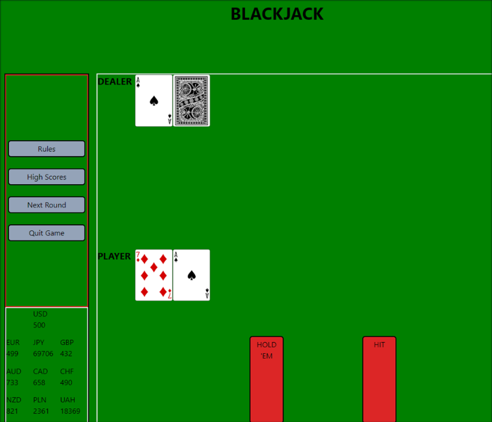

Blackjack Game
Blackjack game was created by me and my group of classmates for our first group project we were assigned. We chose this game because we wanted a fun, casual, risk free blackjack experience for entertainment.